AI/MLHow TReNDS automates root-cause analysis with Amazon Bedrock
TReNDS는 Amazon Bedrock과 Strands Agents SDK 기반 agentic AI pipeline으로 production error의 root-cause analysis를 자동화해 수동 15~30분 작업을 60초 미만으로 줄였다고 소개한다.
이번 실행에서는 전일 이후 새로 저장할 공식 AWS 블로그 항목이 확인되지 않아, 최근 검증 source-summary 기반으로 주목 기사를 정리했습니다.

AI/MLTReNDS는 Amazon Bedrock과 Strands Agents SDK 기반 agentic AI pipeline으로 production error의 root-cause analysis를 자동화해 수동 15~30분 작업을 60초 미만으로 줄였다고 소개한다.

AI/MLCohere Health는 Amazon Bedrock AgentCore Runtime, Gateway, Memory, Agent Skills를 조합해 의료 prior authorization 정책을 구조화·버전관리·검토 가능한 agentic workflow로 디지털화했다.

AI/ML / AnalyticsAWS Generative AI Innovation Center는 constraint programming과 custom tree search로 NHL 플레이오프 clinching scenario를 수학적으로 판정하는 자동화 시스템을 구축했다고 설명한다.

AWSAWS 공식 블로그 RSS에서 2026-08-07 07:01 KST에 수집한 source-summary입니다.
| 기사 | 게시 | 카테고리 |
|---|---|---|
| How TReNDS automates root-cause analysis with Amazon Bedrock | 2026-08-08 | AI/ML |
| How Cohere Health digitizes clinical policies using Amazon Bedrock AgentCore | 2026-08-08 | AI/ML |
| Determining playoff clinching scenarios in the NHL using constraint programming | 2026-08-08 | AI/ML / Analytics |
| Securing AI agents with temporal policies in Amazon Bedrock AgentCore | AWS |
wiki/sources/collection-aws-blog.md